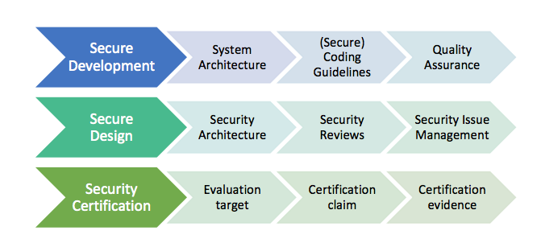

Zephyr 信息安全概述
简介
本文档概述了 Zephyr 信息安全小组委员会为建立一套明确的信息安全流程所采取的步骤。该流程帮助开发者构建更安全的软件，同时满足信息安全合规要求。本文档介绍了信息安全流程的关键理念，并概述了需要编写哪些文档。在流程实施完毕、所有配套文档编写完成之后，本文档将作为顶层概述和入口。
概述与范围
我们首先概述 Zephyr 的开发流程，主要关注信息安全功能。
后续各节将详细讨论该流程的各个部分。如图 1 所示，主要步骤包括：
安全开发：定义系统架构和开发流程，确保遵守相关的编码原则和质量保证程序。
安全设计：定义信息安全规程，并实施措施来执行这些规程。为系统及相关子模块建立信息安全架构，识别威胁，并设计对策。通过代码审查来检查对策实现的正确性以及威胁模型的有效性。最后，应定义一套报告、分类和缓解信息安全问题的流程。
信息安全认证：定义 Zephyr RTOS 中可认证的部分，包括评估对象、其资产以及如何保护这些资产。应确定认证声明，并以适当的证据加以支持。

目标读者
本文档是 Zephyr 信息安全小组委员会和 Zephyr 技术指导委员会（Technical Steering Committee）制定信息安全流程的指南。它为（信息安全）工程师和架构师提供了 Zephyr 信息安全流程的概述。
术语约定
在本文档中，关键词“MUST”、“MUST NOT”、“REQUIRED”、“SHALL”、“SHALL NOT”、“SHOULD”、“SHOULD NOT”、“RECOMMENDED”、“MAY”和“OPTIONAL”应按照 [RFC2119] 中的描述进行解释。
这些词用于定义绝对要求（或禁止）、强烈建议的要求以及真正可选的要求。正如 RFC-2119 所指出的：“这些术语经常用于规定具有信息安全影响的行为。不实现 MUST 或 SHOULD 要求，或者做了规范中规定 MUST NOT 或 SHOULD NOT 做的事情，对信息安全的影响可能非常微妙。文档作者应花时间详细说明不遵循建议或要求所带来的信息安全影响，因为大多数实现者并没有亲历制定该规范时的经验和讨论。”
信息安全文档的更新
本文档是一份持续更新的文档。当识别出新的要求、特性和变更时，将通过以下流程将其加入本文档：
相关方通过向 Zephyr 文档仓库提交 PR 来提交更改。
Zephyr 信息安全小组委员会将审查这些更改，并给出反馈或接受这些更改。
这些更改一经接受，就会成为本文档的一部分。
当前的信息安全定义
本节概述 Zephyr RTOS 中安全开发的现状。目前的重点是信息安全功能和代码质量保证，同时也已规划了更多的信息安全特性。
目前已实施的三项主要信息安全措施是：
信息安全 功能，重点是密码算法和协议。对密码硬件的支持已规划在未来的版本中。Zephyr 的运行时架构是一个单体二进制文件，不需要动态加载器，从而减少了暴露的攻击面。
质量保证 依靠这样一种开发流程来推动：所有代码在提交到公共仓库之前都必须经过审查。此外，复用网络协议栈等经过验证的构建模块可以提升整体质量水平，并保证 API 的稳定。静态代码分析提供了额外的质量检查。
执行保护，包括线程隔离、栈保护和内存保护，从 1.9.0 版本（栈保护）开始已在上游 Zephyr RTOS 中提供。内存保护和线程隔离分别在 1.10.0 版本中为 X86 加入，在 1.11.0 版本中为 ARM 和 ARC 加入。
以下各小节将更详细地讨论这些主题。
信息安全功能
Zephyr 中的信息安全功能主要依赖于所包含的密码算法及其单体式的系统设计。
密码特性通过 PSA Crypto 提供，底层实现为 Mbed TLS。应用程序使用 PSA Crypto API，从而以标准化且安全的方式进行密码操作。Mbed TLS 作为 PSA Crypto 的实现，支持多种密码算法，能够满足各种应用需求。
计划为厂商特定的硬件和软件密码 IP 提供 API，包括以安全访问模块（SAM）、可信平台模块（TPM）和可信执行环境（TEE）等形式提供的安全密钥存储。
信息安全架构基于单体式设计，Zephyr 内核和所有应用程序被编译成一个静态二进制文件。系统调用以函数调用的方式实现，不需要上下文切换。静态链接消除了动态加载恶意代码的可能。
更高的版本中还提供了其他保护特性。栈保护机制用于防止栈溢出。此外，应用程序可以利用线程隔离特性，将系统划分为特权执行环境和非特权执行环境。内存保护特性能够对系统资源（内存、外设地址空间等）进行分区，并将资源分配给单个线程或线程组。栈、线程执行级别和内存保护约束在上下文切换时强制执行。
质量保证
Zephyr 项目采用自动化的质量保证流程。目标是建立一套包括强制代码审查、特性与问题的管理/跟踪以及静态代码分析的流程。
代码审查会被记录在案，并在由负责相应子系统的维护者合入仓库之前，通过投票系统强制执行。代码审查的主要目标是：
验证实现功能的正确性
提高所贡献源代码的可读性和可维护性
确保正确使用字符串函数和内存函数
验证用户输入
审查与信息安全相关的代码，查找潜在问题
目前的编码原则主要关注编码风格和约定。功能正确性由构建系统和审查者的经验来保证。特别是对于与信息安全相关的代码，需要制定具体、详细的指南，并与开发者达成一致（参见 安全编码）。
Zephyr 代码树会定期进行静态代码分析，参见 静态代码分析。
缺陷与问题的跟踪和管理通过 GitHub 进行。“可生存性”（survivability）一词被用来涵盖主动的信息安全工作，例如信息安全问题的分类和管理。被确认为漏洞的问题在 GitHub 信息安全公告中进行管理。
静态分析发现的问题在被作为非问题关闭之前，应经过更严格的审查（关闭之前，至少需要另一名受过信息安全流程培训的人员同意其为非问题）。
已成立一个信息安全小组委员会，负责更详细地制定信息安全流程；本文档就是该流程的一部分。
执行保护
Zephyr 支持执行保护，可分为以下几项任务：
内存隔离：内存将被划分为若干区域，并根据该内存区域的所有者分配属性。线程只能访问由其控制的区域。
栈保护：栈保护区（stack guard）将提供检测和捕获栈溢出的机制。各个线程应只能访问自己的栈。
线程隔离：各个线程应只能访问自己的内存资源。线程被调度时，只有该线程拥有的内存资源可以访问。程序流保护和其他防篡改措施等主题目前不在范围之内。
系统级信息安全（生态系统等）
系统级信息安全涵盖多种类别，例如：
安全/可信启动
空中（OTA）更新
外部通信
设备认证
板载资源的访问控制
Flash 更新
安全存储
外设
信任根
减小攻击面
其中一些类别相互关联，需要多个部分同时到位，才能为应用程序构成完整的解决方案。
安全开发流程
安全代码的开发应遵守一定的准则。其中包括编码指南和开发流程，大致可分为与软件质量相关和与软件信息安全相关的两类。此外，应编写一份系统架构文档，并随着后续开发保持更新。
系统架构

图 2 给出了 Zephyr 系统架构的高层示意图。它将架构分为操作系统部分（内核 + 操作系统服务）和用户特定部分（应用服务）。操作系统部分本身包含底层的平台特定驱动，以及 I/O API、文件系统、内核特定功能和密码库的通用实现。
应编写一份描述系统架构和设计选择的文档，并随着后续开发保持更新。该文档应包括 Zephyr 操作系统的基础架构以及重要子模块的概述。对于每个模块，都应编写一份专门的架构文档，并对照实现进行评估。这些文档应作为新开发者的入门资料，以及信息安全架构的基础。详细信息请参阅 Zephyr 子系统文档。
安全编码
要将 Zephyr 这样的开放软件系统设计得安全，就需要遵守一套明确的设计标准。这些标准收录在 Zephyr 项目文档中，具体见 安全编码 一节。[SALT75] 定义了以下被广泛接受的保护机制原则，以防止违反信息安全的行为并限制其影响：
开放设计（Open design）这一设计原则体现了这样一条格言：在任何被广泛使用的系统上，保护机制都无法保密。因此，不应依赖保密的、定制的信息安全措施，而应使用公认的密码算法和成熟的密码库。
机制经济性（Economy of mechanism）规定，系统的底层设计应尽可能简单、精小。在 Zephyr 项目中，这可以通过模块化代码 [PAUL09] 和抽象的 API 等方式来实现。
完全仲裁（Complete mediation）要求对每个对象和进程的每次访问都必须先经过认证。应尽可能避免使用存储访问条件的机制。
失效安全默认值（Fail-safe defaults）规定，访问默认是受限的，只有在系统保护方案所定义的特定条件下（例如认证成功之后）才被允许。此外，服务的默认设置应以提供最高信息安全的方式来选择。这对应于“默认安全”（Secure by Default）范式 [MS12]。
权限分离（Separation of privilege）原则是指，必须满足两个或更多条件才能授予访问权限。在 Zephyr 项目中，这可以包括拆分密钥 [PAUL09]。
最小权限（Least privilege）描述了这样一种访问模型：每个用户、程序和线程都只应拥有执行其任务所需的、系统中尽可能小的权限子集。这种正向信息安全模型旨在最大限度地减小系统的攻击面。
最少公共机制（Least common mechanism）规定，如果并非绝对必要，多个用户或进程共用的机制不应共享。[SALT75] 中给出的例子是：某个函数应实现为由每个用户各自执行的共享库，而不是实现为由所有用户共享的特权（supervisor）过程。
心理可接受性（Psychological acceptability）要求信息安全特性易于开发者使用，以确保这些特性得到使用并被正确应用。
除了这些通用原则之外，以下几点专门针对安全 RTOS 的开发：
互补安全/纵深防御（Complementary Security/Defense in Depth）：不要依赖单一的威胁缓解手段。在互补安全方法中，部分威胁缓解由底层平台完成。如果平台不提供此类机制，或这些机制不可信，则应采用纵深防御 [MS12] 范式。
较少使用的服务默认关闭：为了减少系统暴露于潜在攻击的程度，仅很少使用的特性或服务不应默认启用（[MS12] 中给出的阈值为 80%）。在 Zephyr 项目中，这可以通过配置管理来实现。每项功能和每个模块都应表示为一个配置选项，并且需要显式启用。这样，特定用例不需要的所有特性、协议和驱动都可以被禁用。如果启用了底层选项和 API 但应用程序并未使用，应通知用户。
变更管理：为了保证对系统所做更改的可追溯性，每项更改都应遵循规定的流程，包括变更请求、影响分析、批准、实施和验证阶段。每个阶段都应提供相应的文档。所有提交都应关联到问题跟踪系统中的缺陷报告或变更请求。没有有效关联的提交应被拒绝。
应基于这些设计原则和公认的最佳实践，编写并发布一份安全开发指南，并将其落实到 Zephyr 开发流程中。更多细节见 Secure Design 一节。
质量保证
质量保证部分包括以下准则：
遵守编码约定，包括编码风格以及模块、函数、变量等的命名方案。这可以提高 Zephyr 代码库的可读性，并使代码审查更容易。这些编码约定在代码合入之前由自动化脚本强制检查。
遵守部署指南，以确保版本发布的一致性，提供记录完善的特性集和可跟踪的信息安全问题列表。
代码审查 用于确保代码库功能上的正确性，每项提议的代码更改在合入之前都应经过代码审查。代码审查应至少由一名独立于代码更改作者的审查者进行。这些审查由子系统维护者和开发者在功能层面进行，应与 Secure Design 一节所述的信息安全审查区分开来。更多信息请参阅 项目与治理 文档。
静态代码分析 工具能够高效地发现大型代码库中的常见编码错误。所有代码在合并到主仓库之前都应使用适当的工具进行分析。这不是针对每个单独的提交，而是按一定的时间间隔在特定分支上运行。每次发布之前，必须消除所有发现的问题，或对可能的误报给出豁免。豁免应集中记录，并以注释的形式写入源代码本身。记录内容应包括所使用的工具及其版本、分析日期、分支和父修订版本号、豁免理由、相应代码的作者以及豁免的批准者。至少应在主发布分支和信息安全分支上运行该分析。应确保每个版本在静态代码分析方面的问题数为零（含豁免）。更多信息请参阅 项目与治理 文档。
复杂度分析 应作为开发流程的一部分进行，并评估圈复杂度等指标。主要目标是使代码尽可能简单。
自动化：审查流程和编码规则符合性检查是提交前检查中的强制部分。为了确保一致地执行，应将它们作为提交前流程的一部分实现自动化。在合并来自子系统的大量代码之前，除了审查流程和编码规则符合性检查之外，还必须运行全部静态代码分析并解决发现的问题。
发布与生命周期管理
生命周期管理包含以下几个方面：
设备管理 涵盖对已部署的、基于 Zephyr 的设备的操作系统和/或信息安全相关子系统进行更新的能力。
生命周期管理：应定义系统阶段并形成文档，同时在系统状态图中给出各阶段之间的转换。出于信息安全考虑，这应包括在检测到攻击时锁定设备，以及在生命周期结束时终止设备。
发布管理 描述了定义发布周期、记录各个版本，以及维护已知漏洞和缓解措施记录的过程。特别是出于认证目的，需要确保发布版本的完整性，使以后的任何篡改（例如植入后门等）都能被轻松发现。
权限管理与保密协议：如果所选择的认证有此要求，则需要通过适当的权限管理（例如独立的源代码仓库）以及相关各方之间的保密协议（NDA）来确保系统的机密性和完整性。如果仓库由多方共享，应采取措施确保不会有恶意代码被合入。
应评估这些要点对 Zephyr 项目所采用的开发流程的影响。
安全设计
为了获得可认证的系统或产品，需要明确定义信息安全流程，并对其执行情况进行监督和推动。该流程涵盖信息安全相关模块开发的所有阶段，以及对已报告的信息安全问题的管理。此外，需要针对当前已知和未来可能出现的攻击途径建立威胁模型，调查其对系统的影响并加以缓解。详细信息请参阅 Zephyr 项目文档中的 安全编码。
软件信息安全流程包括：
遵守安全开发编码规范 是强制性的，以避免个别组件破坏系统的信息安全，并尽量减少各个模块的漏洞。虽然这可以部分通过自动化测试实现，但对于信息安全关键模块，仍然不可避免地需要人工检查信息安全特性（例如对策）的实现是否正确。
信息安全审查 应由信息安全架构师在每个以信息安全为目标的版本发布之前，以及每次 Zephyr 项目中的信息安全相关模块发生更改时进行。该过程包括验证已实施的信息安全措施的有效性、检查是否遵循全局信息安全策略和架构，以及在需要时为信息安全认证审计做准备。
信息安全问题管理 涵盖对潜在系统漏洞的评估及其缓解，如 信息安全问题管理 中所述。
这些准则和任务需要集成到安全软件的开发流程中，并应尽可能实现自动化。在系统层面，以及对于 Zephyr 安全分支中的每个信息安全相关模块，都应指定一名直接负责的信息安全架构师来指导安全开发流程。
信息安全架构
上述通用指南应辅以系统层面和模块层面的信息安全架构设计。高层考虑因素包括：
识别 信息安全和合规要求
信息安全功能，例如在适用时使用密码函数
针对已知攻击途径设计 对策
记录与信息安全相关的 可审计事件
支持 可信平台模块（TPM） 和 可信执行环境（TEE）
支持对使用 Zephyr 的设备进行 现场 更新 的机制
任务调度器与隔离
信息安全架构的开发基于从整体系统架构的结构概览中得出的资产。在此基础上，各个步骤包括：
识别资产，例如用户数据、认证和加密密钥、密钥生成数据（从 RNG 获得）以及与信息安全相关的状态信息。
识别 针对这些资产的 威胁，例如破坏机密性、篡改用户数据等。
定义 有关资产信息安全和保护的 要求，例如对策或内存保护方案。
信息安全架构应与现有的系统架构和实现相协调，以找出潜在的偏差并缓解现有的弱点。集成到 Zephyr 项目安全分支中的新开发子模块，应各自提供描述其信息安全架构的文档。此外，还应考虑并记录它们对系统级信息安全的影响。
信息安全漏洞报告
有关报告信息安全漏洞的信息，请参见 信息安全漏洞报告。
威胁建模与缓解
要制定准确的信息安全架构，并满足大多数认证方案的要求，就需要对 Zephyr RTOS 面临的信息安全威胁进行建模。该过程的第一步是定义系统要保护的资产。下一步是对系统如何保护这些资产以及这些资产面临哪些威胁进行建模。识别出威胁后，创建相应的威胁模型。该模型包含资产和系统的漏洞，以及对这些漏洞可能被如何利用的描述。此外，还需要评估对资产、资产所在模块以及整个系统的影响。然后，在模块和系统的信息安全架构中考虑该威胁模型，并定义适当的对策来缓解威胁或限制漏洞利用的影响。
简而言之，威胁建模过程可以分为以下步骤（改编自 [OWASP]）：
定义资产
分解应用程序，并创建相应的数据流图（DFD）
使用 [STRIDE09] 和 [CVSS] 方法识别威胁并进行分类
确定对策和其他缓解方法
该过程应在模块的设计阶段进行，并在模块或系统架构发生重大变化之前进行。此外，每当发现新的漏洞或漏洞利用时，都应创建新的模型或更新现有模型。在信息安全审查期间，负责的信息安全架构师应评估威胁模型和缓解技术。
应根据这些威胁模型和缓解技术推导出测试，以证明对策的有效性。这些测试应集成到持续集成工作流中，以确保信息安全不会因回归而受损。
漏洞分析
为了找出软件实现中的薄弱环节，应进行漏洞分析（VA）。尤其值得关注的是对密码算法、关键操作系统任务和连接协议的调查。
在纯软件层面，这包括：
在特定硬件平台上对 RTOS 进行 渗透测试，即把相应的 Zephyr 操作系统配置和硬件作为一个整体系统进行测试。
应考虑 侧信道攻击（时间恒定性、功耗恒定性等）。例如，需要确保密码算法和模块的 时间恒定性，以减小攻击面。这既适用于软件实现，也适用于使用密码硬件的情况。
应对公开的 API 和协议进行 模糊测试。
上面给出的列表主要用于举例说明。对于每个模块以及完整的 Zephyr 系统（一般是在特定硬件平台上），都应制定并执行合适的 VA 计划。这些分析的结果应纳入信息安全问题管理流程中考虑，从中获得的经验应整理成指南，并纳入安全编码指南。
如果可能（例如模糊分析），这些测试应集成到持续集成流程中。
信息安全认证
建立 Zephyr RTOS 安全分支的目标之一，是构建一个可认证的系统或其可认证的子模块。认证范围和认证方案尚未确定。但是，许多认证（例如通用准则（Common Criteria）[CCITSE12]）都要求提供证据，证明评估声明确实得到满足，因此下面概述一个通用的认证流程。该流程需要根据最终选定的认证方案和评估级别进一步细化。
通用认证流程
一般来说，进行认证或预认证（参见 [MICR16]）的步骤如下：
定义 Zephyr RTOS 中要保护的 资产。可能的候选资产包括机密信息（例如密码密钥）、用户数据（例如通信日志），以及厂商或制造商的知识产权。
建立 威胁模型 和 信息安全架构，保护资产免遭针对系统漏洞的利用。由于完整的威胁模型涵盖包括硬件平台在内的整个产品，因此可以采用拆分模型来实现：其中包含一个经过预认证的 Zephyr 安全分支，厂商可以基于它来认证自己基于 Zephyr 的产品。
制定 评估对象，其中包括关于待评估和认证资产信息安全的 认证声明，以及关于运行条件的假设。
提供声明得到满足的 证明。这包括信息安全开发流程等方面的一致文档。
前面各节也部分涉及了这些步骤。与这些章节不同的是，认证流程只需要考虑认证所涵盖的组件。例如，信息安全架构考虑的是系统层面的资产，可能包含与认证无关的内容。
认证选项
对于信息安全认证本身，可以采取以下几种选项：
将 Zephyr 作为纯软件系统进行抽象预认证：该选项需要对底层硬件平台以及运行在 Zephyr 之上的最终应用程序作出假设。如果硬件和应用程序满足这些假设，就可以更容易地获得完整认证。这是最灵活的方法，但给产品厂商带来的负担最大。
在特定硬件平台上认证 Zephyr，而不针对特定应用程序：该方案描述的是构建一个运行 Zephyr RTOS 的安全平台。硬件制造商在对应用程序作出明确假设的前提下对平台进行认证。如果这些假设得到满足，就可以用很少的工作量对最终产品进行认证。
认证实际产品：在这种情况下，要认证的是一个完整的产品，包括特定的硬件、Zephyr RTOS 和应用程序。
在这三种情况下，都需要确定认证方案（例如 FIPS 140-2 [NIST02] 或通用准则 [CCITSE12]）、认证范围（主线 Zephyr、安全分支或特定模块）以及认证/保证级别。
对于部分认证（选项 1 和 2），认证需要对硬件和/或软件作出假设。这些假设可以包括 [GHS10]：
硬件平台及其环境具有 适当的物理安全。
硬件平台本身及所有相连设备上的 存储信道和时序信道受到充分保护。（未提及远程连接。）
设备上只运行 可信/有保证的应用程序。
设备及其软件栈由 经过适当培训、值得信任且无恶意意图的人员 进行配置和操作。
这些假设应作为信息安全声明和评估对象文档的一部分。